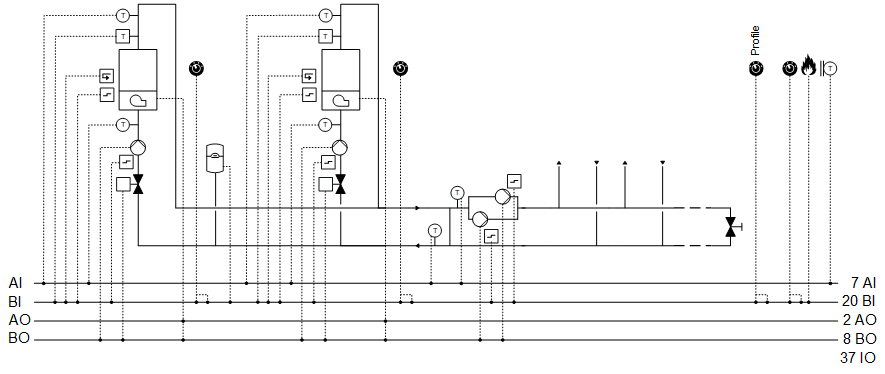
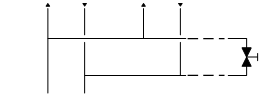
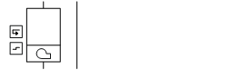
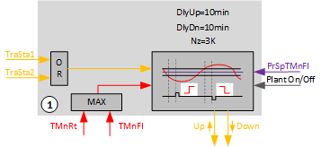
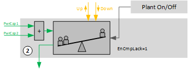
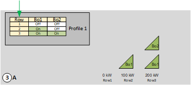
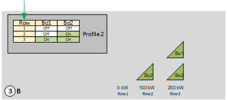
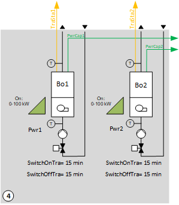

[HGen22] 发热，2 个带外部锅炉控制的锅炉（在 /off 命令、设定值、反馈、常见故障上）
工厂示例 HGen22 有两个相同的锅炉，具有自己的控制（外部控制）。
Functions
- Collects heat demand and controls to the corresponding setpoint
- Boiler sequence control
- Logic for power control based on a comparison of the setpoint versus actual value on the main flow and delay times
- Profile changeover
Plant diagram

Components
- 2 identical boilers with own control
- Bypass between main flow and main return (hydraulic separator)
- Main pump group, consumer side
Components and functions
设备示例的组件和功能：
成分 | 功能 | BACnet object |
|---|---|---|
| Sensor for outside temperature 测量室外温度。 | > [AI] 室外气温 |
| Fire detection contact 此__VAR_000__中，风道面积仅供用户参考；它不用于阻尼器位置计算。没有系数对象或系数计算逻辑。 | [BI]Fire detection contact |
| Operating mode switch 将工厂切换至：Auto | Off | On | [MI]Operating mode switch |
| Manual operating mode selection 将工厂切换至：Auto | Off | On | [MCnfVal]Manual operating mode selection |
| Profile selector. 将配置文件切换为：自动|简介 1 |简介2 | [MI] 配置文件切换 [MCalcVal]Present profile |
| Manual profile selection 将配置文件切换为：自动|简介 1 |简介2 | [MConfigVal] 手动配置文件选择 |
| Present operating mode 报告当前操作模式：Off | On | [MCalcVal]Present operating mode |
| Reason for present operating mode 报告当前操作模式的原因：Exception | Operating mode switch | Manual operating mode selection|热量要求 | [MCalcVal]Reason for present operating mode |
 | Heat request 获取并评估热量需求。 | [ACnfVal]Offset for setpoint heating request [ACnfVal]Minimum setpoint heating request |
| Main pump group, consumer side 根据需求每次打开/off 一台泵。 根据泵的运行时间选择泵。 |
> [BO]Command pump 1 > [BO]Command pump 2 |
报告相应泵的故障并将其关闭。如果需要并且可能的话，备用泵被打开。 如果两台泵均出现故障，设备将关闭。 | > [BI]Fault pump 1 > [BI]Fault pump 2 | |
| Hydraulic separator, temperature measurement |
|
主流温度传感器 测量用户端的主流温度。 | [AI]Main flow temperature consumer side | |
主回水温度传感器 测量发电侧主回水温度。 | [AI]Main return temperature generation side | |
| Setpoint determination 计算锅炉温度的设定值。 | [ACalcVal]Present setpoint for main flow temperature [ACnfVal]Delta setpoint for boiler temperature |
| Step up/down 根据最大值选择相应的温度传感器。 将设定值与相关实际值（最大选择）进行比较，并在延迟后要求更多或更少的功率。 |
|
| Power control and compensation 获取电力需求。 通过配置文件表在两个方向补偿功率需求：
|
|
| Profile table 锅炉及其阶段的顺序运行表。表中每条额外的线（向上或向下）代表额外的功率。 通过热量请求和预定义顺序控制锅炉。 确定是否添加或关闭锅炉。 |
|
Fault message expansion vessel 此__VAR_000__中，风道面积仅供用户参考；它不用于阻尼器位置计算。没有系数对象或系数计算逻辑。 | [BI] 故障膨胀容器 | |
Boilers 1 & 2 两个相同的锅炉 |


 Main pump group (
Main pump group (
Boilers 1 & 2
成分 | 功能 | BACnet object |
|---|---|---|
| Boilers 1/2 |
|
Manual switch 关闭锅炉。Auto | Off | On | [MI]Manual switch | |
| Boiler temperature 锅炉温度传感器 测量锅炉温度。 | [AI] 温度 |
| Safety temperature limiter 监控锅炉温度。 关闭锅炉的外部控制。 保持截止阀打开并打开锅炉泵两分钟。然后关闭截止阀并关闭泵。 | > [BI]Safety temperature limiter |
 | Interface to external control |
|
发布 释放外部控制 | > [BO] Command | |
锅炉温度设定值 传输外部控制的温度设定值。 | > [AO]Temperature setpoint | |
故障信息 报告故障。 关闭锅炉。 | > [BI] Fault | |
反馈，二进制 | > [BI] 反馈 | |
| Return temperature sensor 测量回水温度。 | [AI]Return temperature |
| Pump |
|
命令 根据需要打开/off 泵。 | > [BO] Command | |
故障信息 报告故障。 关闭锅炉。 | > [BI] Fault | |
Shutoff valve 锁定锅炉回流/down. |
| |
命令 关闭或打开锅炉回路：关闭 |打开 | > [BO] Command |


Overview
下图是工厂示例 HGen22 的简化说明。
Sequencing energy generators

Key
1 |
|
PrSpTMnFl | Present setpoint for main flow temperature |
3 |
|
Bo1 | Boiler 1 |
Bo2 | Boiler 2 |
4 |
|
TraSta1 | Transient state 1 |
TraSta2 | Transient state 2 |
PwrCap1 | 可用功率1 |
PwrCap2 | 可用功率2 |
Step up/down (1)

Key
DlyUp | 上行脉冲延迟 |
DlyDn | 下行脉冲延迟 |
Nz | Neutral zone |
TraSta1 | Transient state 1 |
TraSta2 | Transient state 2 |
PrSpTMnFl | Present setpoint for main flow temperature |
TMnRt | 水力分离器之前的主回路温度（发电机侧） |
TMnFl | 水力分离器后主流温度（消耗侧） |
重要设置：
- Neutral zone (Nz) = 3 K
- Delay for up impulse (DlyUp) = 10 min
- Delay for down impulse (DlyUp) = 10 min
如果启用该功能，则选择主流量“TMnFl”和主返回“TMnRt”中两个温度中的较高值作为受控变量。如果测量温度按设定点“SpT”离开中性区“Nz”，则通过输出“StepUp”或“StepDn”发送脉冲“Step up”或“Step down”以实现功率平衡。脉冲的发送有延迟。延迟是使用设置“DlyUp”和“DlyDn”确定的。
有两种情况：
- One or both temperatures drop. Pulse "Step up" is generated.
Heat generation supplies too little power and/or flow in the consumer circuit is higher than in the generation circuit. - One or both temperatures increase. Pulse "Step down" is generated.
Heat generation supplies too much power and/or flow in the consumer circuit is lower than in the generation circuit.
为了防止过早地继续切换，评估逻辑在每个脉冲之后保持。启用的热发生器将其“TraSta”返回到“Step up/down”。一旦过渡状态到期，评估逻辑就会重新启动。
向上或向下
Power control and compensation (2)

Key
PwrCap1 | 可用功率1 |
PwrCap2 | 可用功率2 |
EnCmpLack | 断电时自动功率补偿 |
重要设置：
- Automatic power control and compensation for a loss of power (EnCmpLack) = 1 (see below)
功率控制和补偿接收来自“升压/down”的请求，以由于脉冲“升压”或“降压”而增加或减少功率。这样，“功率控制和补偿”就会触发配置文件表中下一行或上一行的更改。
然后，“功率控制和补偿”检查“配置表”中行的变化是否导致当前产生的输出达到预期的增加或减少。它接收当前产生的功率输入 [PwrCap] 的反馈，并将其与内部存储器 [PrPwrCap] 中的值进行比较。
如果未达到所需结果，“功率控制和补偿”会更改行，直到达到所需的当前功率增加或减少。
电源短缺时自动功率补偿 [EnCmpLack]：根据输入 [PwrCap] 检测电源短缺，并通过顺序步骤进行平衡，例如由于故障导致热发生器损失。
功率控制与补偿
Profile table (3)
在配置表中，确定了打开热发生器的顺序。可以创建四个不同的配置文件。这些条目被输入到每个配置文件中，以便启用的热发生器或级的总功率随着行数的增加而增加。
功能块 SELP_8MS 确定配置文件表。
[SELP_8MS] Profile and table value selection for 8 multistate values
示例中准备了两个配置文件：
配置文件 1：锅炉 1 首先启动。

锅炉 1 (100 KW) 是具有自己控制的锅炉。
锅炉2在以下2种情况下添加：
- The power for boiler 1 is not sufficient
- Boiler 1 is in fault
配置文件 2：锅炉 2 首先启动。

锅炉 2 (100 KW) 是具有自己控制的锅炉。
以下两种情况切换至锅炉1：
- The power for boiler 2 is not sufficient
- Boiler 2 is in fault
示例中计划根据锅炉运行时间进行配置转换。
也可以手动选择配置文件。
型材表
配置文件转换在功能块 ROT_8 中实现。
[ROT_8] Rotation switch with 8 outputs
Heat generator (Boiler 1 and 2) (4)
由配置文件表启用的热发生器报告可用功率 [PwrCap] 以进行功率控制和补偿。
如果功率级发生主动变化，它们还会将瞬态 [TraSta] 报告为“Step up/down”。在活动瞬态期间不会触发进一步的“升压”或“降压”。

Key
TraSta1 | Transient state 1 |
TraSta2 | Transient state 2 |
PwrCap1 | 可用功率1 |
PwrCap2 | 可用功率2 |
Bo1 | Boiler 1 |
Bo2 | Boiler 2 |
SwiOnTra | 接通时的瞬态 |
SwiOffTra | 关断时的瞬态 |
Boiler 1/2 with external control, single-stage pump, shutoff valve
操作模式：关、开、最小。
功率反馈设置：
完成功能块 SELMS_R 上的电源设置
1 Off = 0 KW
2 On = 100 KW
嵌套图表 BoTraSta(1) 上瞬态反馈的设置：
Components, sequence, and functions in CMDSEQ_B (Bo1/2)
工厂运行模式 | 成分 | ||
|---|---|---|---|
| Vlv | Pu | ExtCtl |
Off | 离开 | 离开 | 离开 |
On | On | On | On |
| |||
Sequences |
| ||
启动顺序 | 1 | 2 | 2 |
启动功能 | 反馈 | AND （具有下一个聚合的组） | AND （具有下一个聚合的组） |
启动延迟 | - | - | - |
| |||
停止顺序 | 2 | 2 | 1 |
停止功能 | AND （具有下一个聚合的组） | AND （具有下一个聚合的组） | 延迟 |
停止延迟 | - | - | 2m |
[CMDSEQ_B] Command sequence for binary
Start sequence
- The shutoff valve opens. It is further switched if an operating message comes from the shutoff valve on the input pin for CmdSeq(Bo1).
- The pump and external control coil switch on at the same time (function AND, Group with next aggregate).
Stop sequence
- External control switches off. It waits for 2 minutes (function Delay).
- The shutoff valve closes and the pump switches off (Function AND, Group with the next aggregate).
Main pump group, consumer side
该示例实现了两个主泵，每个主泵都有一条故障消息。
转换发生：
- Every 168 hours regardless of operating hours
- Regardless of fault
转换在功能块 ROT_8 中实现。
[ROT_8] Rotation switch with 8 outputs
Setpoint generation and temperature control
单独的热量消耗传输其热量请求并根据该热量请求形成主流的温度设定点。设定点稍微增加并发送到热发生器。
设定值生成

Key
1, 2 |
|
PrSpTMnFl | Present setpoint for main flow temperature |
DSpTBo | Delta setpoint for boiler temperature |
3 |
|
Bo1 | Boiler 1 |
Bo2 | Boiler 2 |
4 |
|
Bo1'ExtCtl'SpT | 锅炉 1 的设定值 |
Bo2'ExtCtl'SpT | 锅炉 2 的设定值 |
工厂运行模式：
- Off (1)
- On (2)
操作模式在 [MCalcVal] 对象“当前操作模式”上报告。
同时，将当前操作模式的原因报告给另一个 [MCalcVal] 对象：
- Exception (1)
- Operating mode switch (2), resulting from an active (not equal to Auto) operating mode switch
- Operating mode (3), resulting from an active (not equal to Auto) manual operating mode selection
- Heat request (4)
有正常模式和异常模式。
Normal operation
正常模式的来源：
- [MI] Operating mode switch
- [MCnfVal] Manual operating mode selection
- [HReq (1)] Heat request
在正常运行中，运行模式“打开”，主泵打开，锅炉顺序运行逻辑（升压/down、功率控制和补偿以及配置表）启用。锅炉顺序操作的逻辑使用其功能块 CMDSEQ_B 控制各个能量发生器。
[CMDSEQ_B] Command sequence for binary
Exception mode
异常模式的来源：
- Fire detection contact
- Fault to expansion vessel
- Faults to both pumps in the main pump group
- Fault to both boilers
在异常模式下，所有输出均以优先级 5 直接关闭，并且当前操作模式设置为“关闭”。
报告来自能量发生器上所有 CMDSEQ_B 的输入 [RpdOff]。
Start-up control (nested chart SttUpAlmHdl)
以下功能可用于设备的自动启动，例如断电和恢复供电后：
- Fixed switch-on delay (can be set on input pin [DlySttUp])
- The plant remains off to ensure communications are reliable and cross-check references are triggered. 'Exception' is reported as the reason for the present operating mode.
- Automatic acknowledge (2x) of possible pending alarms during a fixed switch-on delay.
- Additional adjustable delay for staged plant ramp-up (can be set on input pin [DlyOn])
Alarm handling (nested chart SttUpAlmHdl)
工厂事件的状态通过 BACnet 对象“工厂状态”获取。状态映射到功能块 CMN_EVT 上。
[CMN_EVT] Common event
可以使用以下功能：
- Automatic acknowledge (2x) after startup
- Alarm acknowledgement with a value object
- Alarm indication:
- For pending alarms On
- For unprocessed alarms flashing - Ability to connect the acknowledge button [BI]
- Ability to connect to an alarm indication [BO], e.g. an alarm lamp through an output block [BO]
- Ability to connect to other alarm handling functions on other plants, e.g. acknowledge button and alarm indication for multiple plants in the same control cabinet
姓名 | 描述 | 类型 | Signal/connection | 状态文本 | 工程单位 |
|---|---|---|---|---|---|
FireDetCont | Fire detection contact 报警功能：扩展（通知等级 7） 参考值：Tripped 时间偏差：0[s] | BI | NC contact | Normal | Tripped | N/A |
OpModSwi | Operating mode switch | MI | N/A | 汽车 |关闭 |在 | N/A |
TOa | 室外气温 | AI | LG-Ni1000 | N/A | -70...70 [°C]
|
PrfSwi | 配置文件开关 | MI | N/A | 汽车 |简介 1 |简介2 | N/A |
FltPu (1) | Fault pump (1) 报警功能：扩展（通知等级 7） 参考值：Tripped 时间偏差：0[s] | BI | NO contact | Normal | Tripped | N/A |
FltPu (2) | Fault pump (2) 报警功能：扩展（通知等级 7） 参考值：Tripped 时间偏差：0[s] | BI | NO contact | Normal | Tripped | N/A |
CmdPu (1) | Command pump (1) | BO | NO contact | 关闭 |在 | N/A |
CmdPu (2) | Command pump (2) | BO | NO contact | 关闭 |在 | N/A |
TMnFlCns | Main flow temperature consumer side | AI | LG-Ni1000 | N/A | 0...100 [°C] |
TMnRtGen | Main return temperature generation side | AI | LG-Ni1000 | N/A | 0...100 [°C] |
FltExpsVss | 膨胀水箱故障 | BI | NO contact | Normal | Tripped | N/A |
博1'曼斯维 | 锅炉1手动开关 | MI | N/A | 汽车 |关闭 |在 | N/A |
博1'T | 锅炉1温度 | AI | LG-Ni1000 | N/A | 0...100 [°C] |
Bo1'TRt | 锅炉1回水温度 | AI | LG-Ni1000 | N/A | 0...100 [°C] |
Bo1'SftyTLm | 锅炉1安全温度限制器 报警功能：基本（通知等级 8） 参考值：触发 时间偏差：0[s] | BI | NO contact | Normal | Tripped | N/A |
Bo1'ExtCtl'Flt | 锅炉1外控故障 报警功能：基本（通知等级 8） 参考值：触发 时间偏差：0[s] | BI | NC contact | Normal | Tripped | N/A |
Bo1'ExtCtl'Fb | 锅炉1外控反馈 | BI | NO contact | 关闭 |在 | N/A |
Bo1'ExtCtl'SpT | 锅炉 1 外部控制温度设定值 | AO | 0...10V | N/A | 0...100 [°C] |
Bo1'ExtCtl'Cmd | 锅炉1外部控制命令 | BO | NO contact | 关闭 |在 | N/A |
Bo1'Pu'Cmd | 锅炉1泵命令 | BO | NO contact | 关闭 |在 | N/A |
Bo1'Pu'Flt | 锅炉1泵故障 报警功能：扩展（通知等级 7） 参考值：触发 时间偏差：0[s] | BI | NO contact | Normal | Tripped | N/A |
Bo1'Vlv'位置 | 锅炉1阀门指令 | BO | NO contact | 关闭 |打开 | N/A |
Bo2'ManSwi | 锅炉2手动开关 | MI | N/A | 汽车 |关闭 |在 | N/A |
博2'T | 锅炉2温度 | AI | LG-Ni1000 | N/A | 0...100 [°C] |
Bo2'TRt | 锅炉2回水温度 | AI | LG-Ni1000 | N/A | 0...100 [°C] |
Bo2'SftyTLm | 锅炉2安全温度限制器 报警功能：基本（通知等级 8） 参考值：触发 时间偏差：0[s] | BI | NO contact | Normal | Tripped | N/A |
Bo2'ExtCtl'Flt | 锅炉2外控故障 报警功能：基本（通知等级 8） 参考值：触发 时间偏差：0[s] | BI | NC contact | Normal | Tripped | N/A |
Bo2'ExtCtl'Fb | 锅炉2外部控制反馈 | BI | NO contact | 关闭 |在 | N/A |
Bo2'ExtCtl'SpT | 锅炉 2 外部控制温度设定值 | AO | 0...10V | N/A | 0...100 [°C] |
Bo2'ExtCtl'Cmd | 锅炉2外部控制命令 | BO | NO contact | 关闭 |在 | N/A |
Bo2'Pu'Cmd | 锅炉2泵命令 | BO | NO contact | 关闭 |在 | N/A |
Bo2'Pu'Flt | 锅炉2泵故障 报警功能：扩展（通知等级 7） 参考值：触发 时间偏差：0[s] | BI | NO contact | Normal | Tripped | N/A |
Bo2'Vlv'位置 | 锅炉2阀门指令 | BO | NO contact | 关闭 |打开 | N/A |